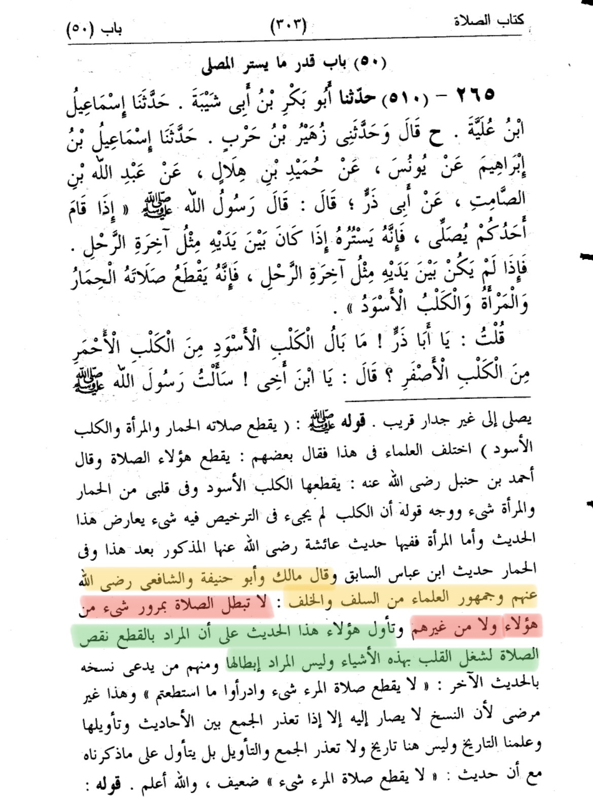
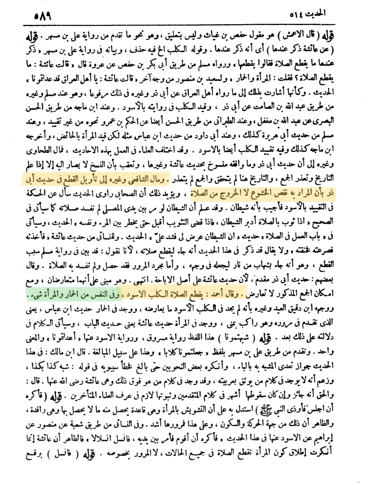

﷽
السلام عليكم و رحمة الله و بركاته
So this claim was diverted from a Hadith in Muslim 510, the apparent issue is that they claim is that the Hadith
is “making women like animals” and in sha allah we will answer that today!
.
Point 1:
The passing of the above-mentioned in front of the person at prayer does not invalidate his prayer according
to the vast majority of the Imams of Law, Salaf and Khalaf (early and late authorities) who concur that the
meaning of "will cut off his prayer" is not literal but means: "will make his prayer imperfect" due to the
distraction they will cause in people's hearts, while Imam Ahmad considered that only the passing of a black
dog actually invalidates it. This was mentioned by Imam al-Nawawi in Sharh Sahih Muslim
Translation:
“And Malik, Abu Hanifa, and Al Shafi’ (may Allah be pleased with them) and the majority of scholars from the
salaf and the Khalf: the prayer doesn’t get invalidate cause of any of those mentioned or others.
And they interpreted the hadith, that the meaning of “cut” is shortage of the prayer, because the heart would
be busy (focused) on that stuff and the meaning isn’t making it invalidate”
Source: Sahih muslim bi-sharh An-nawwai (المجلد الاول/صفحة 303)

Translation:
And Al Shafi’ and others have interpreted the word "cut” (القطع) in the Hadith, to the meaning of shortage
in focus of prayer and not invalidating the prayer
And Ahmed said: the black dog invalidate the prayer, and in the soul something (distraction) because of donkey
and women.
Source: Fath Al Bari (الجزء الاول/صفحة 589)

You might be asking, why women is mentioned?
Al-Qurtubi (may Allah have mercy on him) said:
That is because a woman may be a source of fitnah, a donkey may bray and a dog may be frightening,
and the one who thinks about that may become so distracted that his prayer is interrupted and spoiled.
Because these things could lead to interruption of the prayer, they are described as interrupting it.
In other words the hadith does not view women as impure or equal to animals, thats nonsense,
what the hadith ment is that women who pass by in front of a praying person , can distract that person
during his prayer (which would make his prayer imperfect), the beauty can distract his attention.
And the dog will also distract the prayer (due to it’s smell or sound/wildness etc)